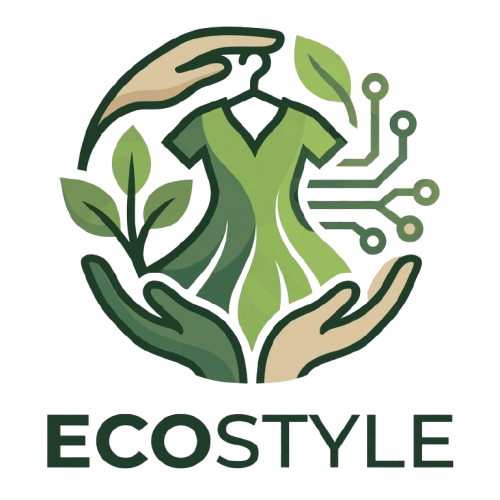
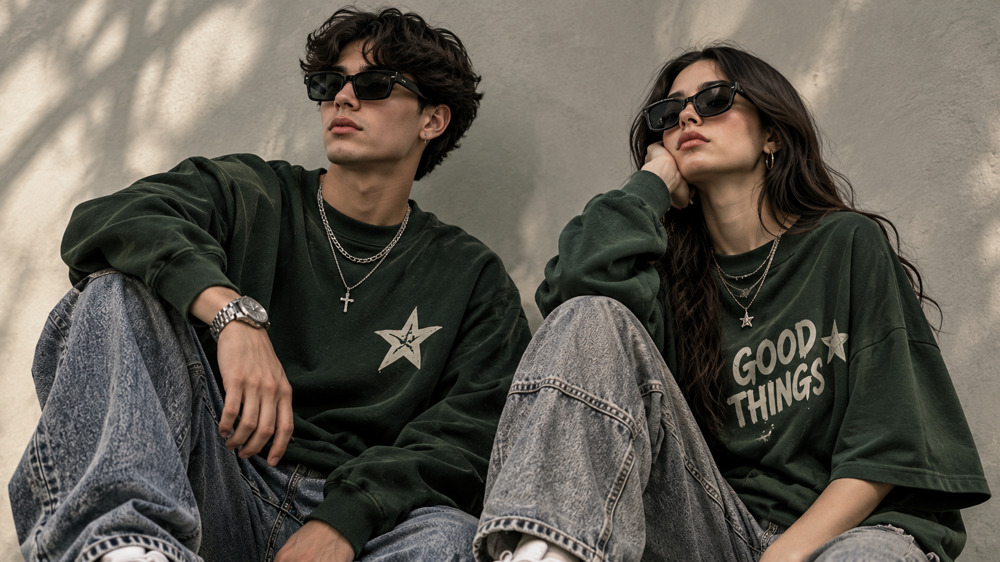
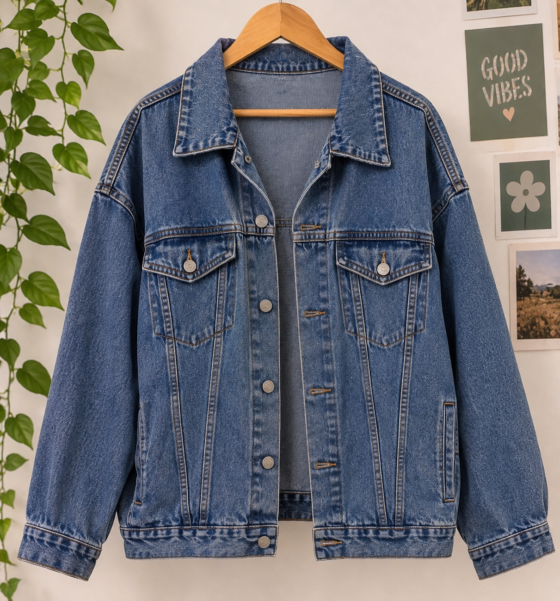
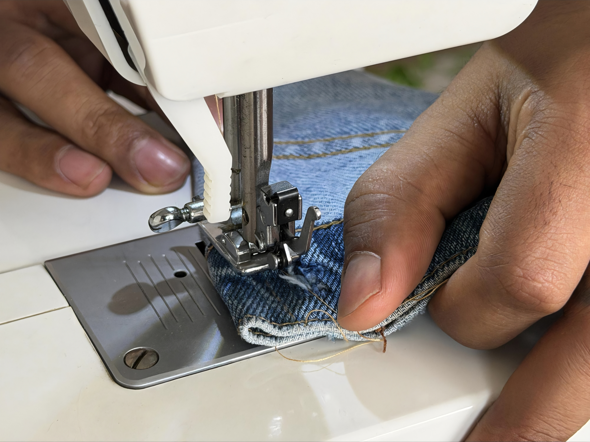
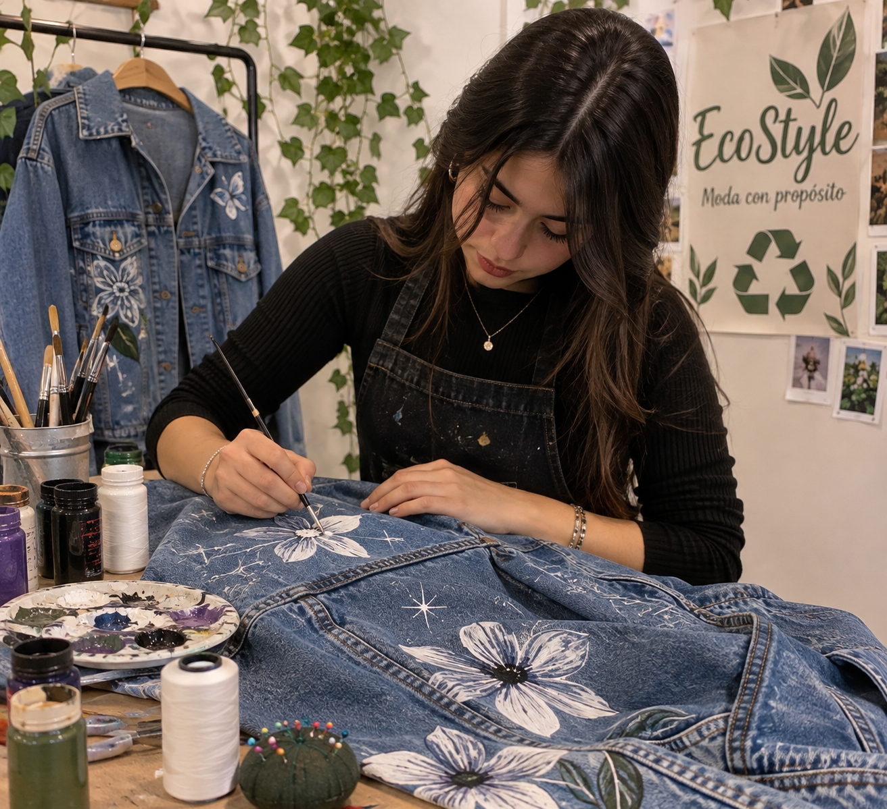
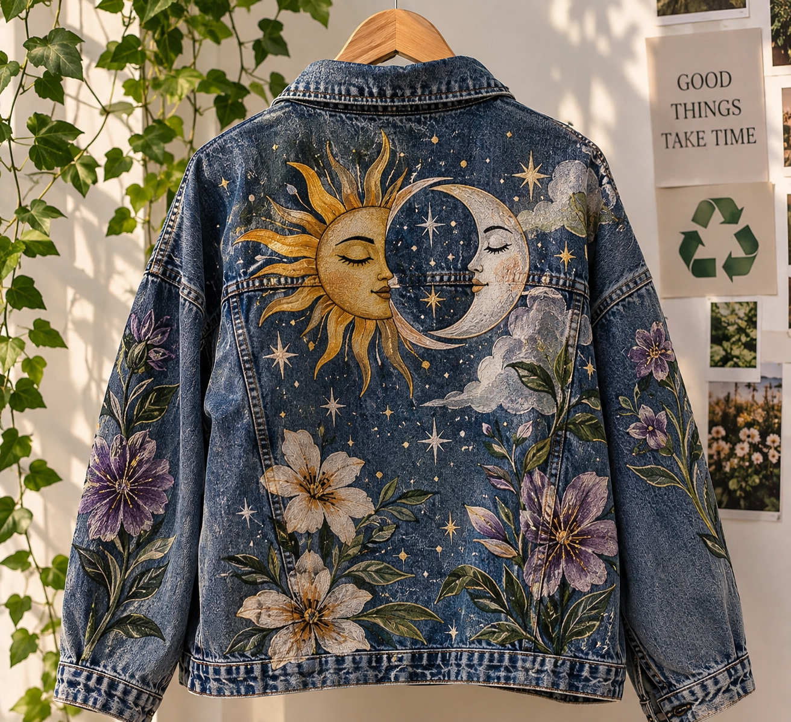

En EcoStyle buscamos darle una segunda vida a la ropa usada, transformándola en prendas modernas, únicas y económicas. Está dirigido principalmente a jóvenes y combinando la moda, creatividad y cuidado del medio ambiente, brindando apoyo al talento local.

Transformamos prendas olvidadas en piezas unicas y llenas de creatividad

Elegimos ropa usada,que merece tener una nueva oportunidad

Reparamos, transformamos y preparamos cada prenda.

Agregamos detalles y diseños artisticos que hacen cada pieza especial.

Prendas excluidas que cuentan una nueva historia.